✓ Ejemplo regla 1 y 2: dos Iron Will, sólo un chungo.
3. Los personajes tampoco podrán ser repetidos, salvo aquellos sobrevivientes que tengan skins legendarias que son de un aspecto totalmente diferente.✓ Ejemplo regla 3: Jill Valentine y Claire Redfield.
4. Los objetos y addons tendrán como rareza máxima verde.✓ En los dos supuestos anteriores (4 y 5), quedarán exentos del cumplimiento, aquellos equipos que hayan conseguido un "Fernan".
6. Estará prohibido usar Objeto de Obsesión.✓ Ejemplo: sólo uno de curación, sólo uno de exponencial, etc.
9. A partir de la fase "PCDIOS", la regla que impide que los survivors jueguen sin repetir sus perks de agotamiento queda anulada. Sin omitir lo dispuesto en el art. 1.
I. Cuando el survivor en cuestión, haya sido abandonado por otro survivor a modo de estrategia
para encontrar trampilla.
II. Cuando el último survivor colgado, tenga cuelgues restantes y no haya otro survivor que
pueda rescatarlo.
| Combinación addons | Asesino |
|---|---|
| 1 addon verde y otro amarillo | 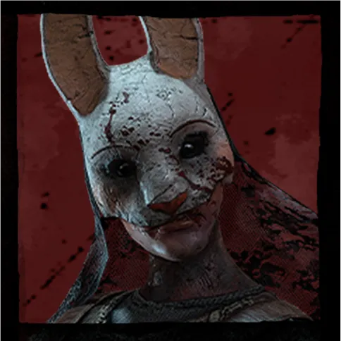 |
| 2 addon verde o amarillos | 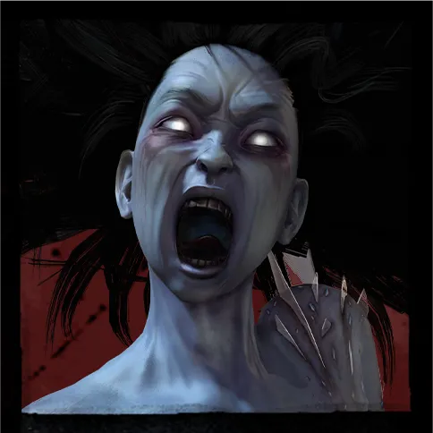 |
| 1 addon morado y otro inferior | 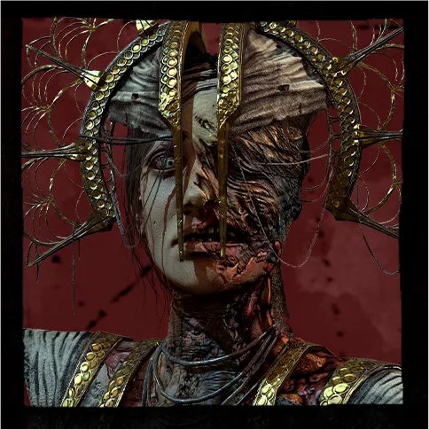 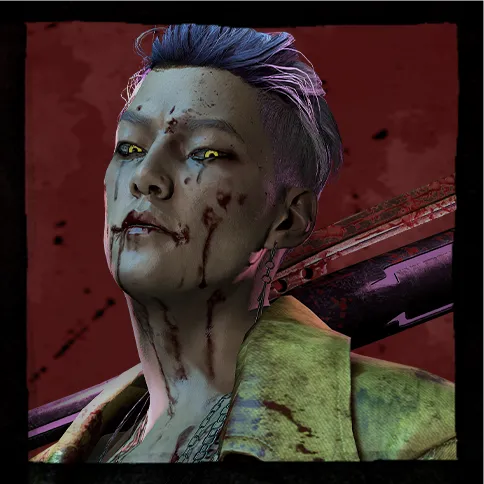 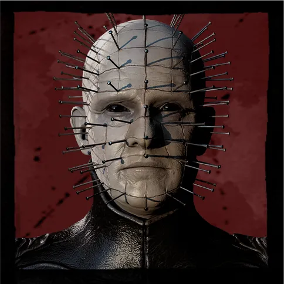 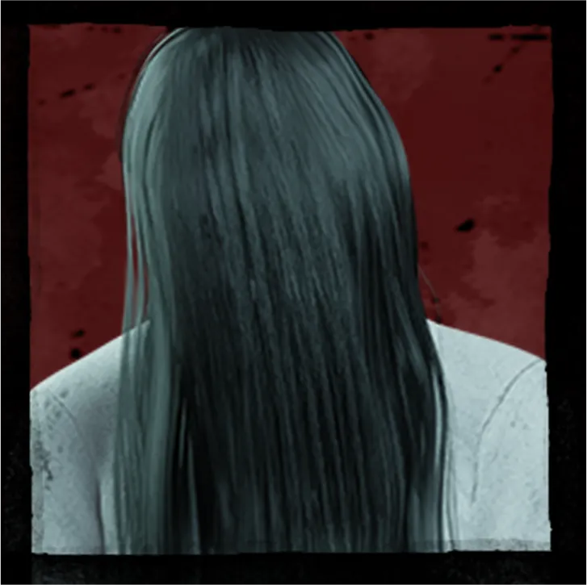 |
| Addons morados o inferiores | 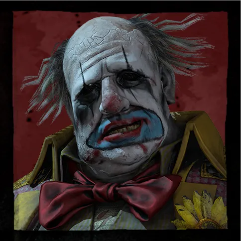 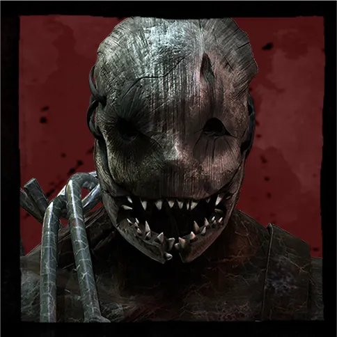 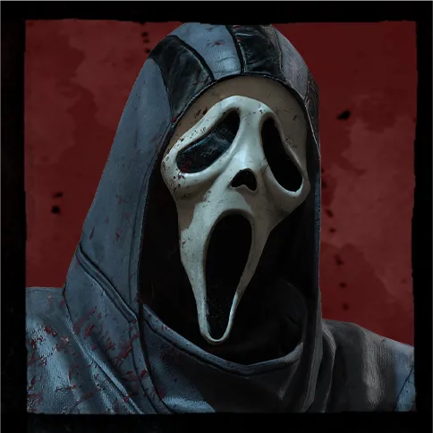 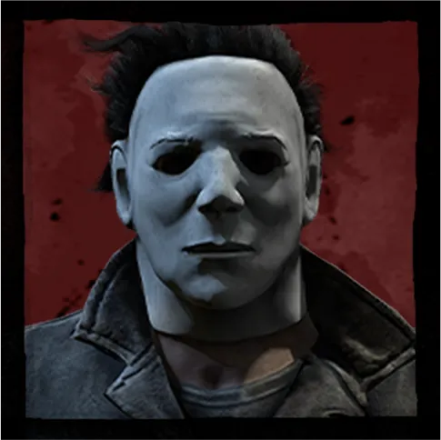 |
| Cualquier addon | 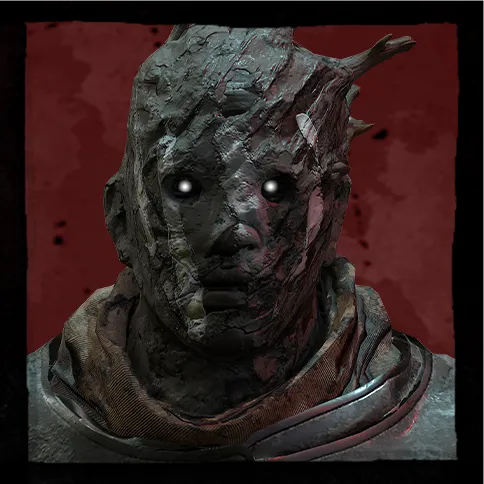 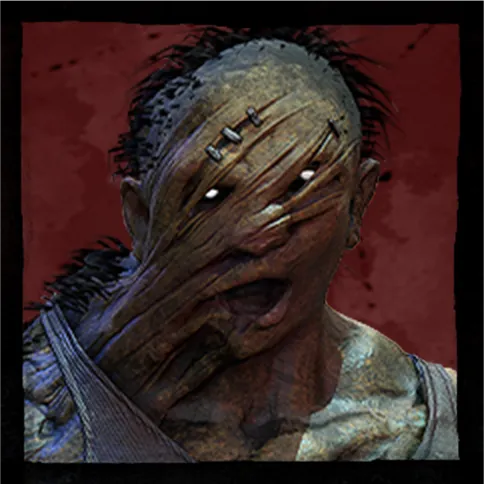 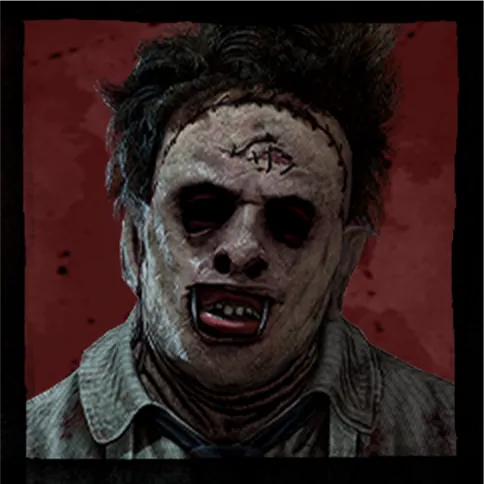 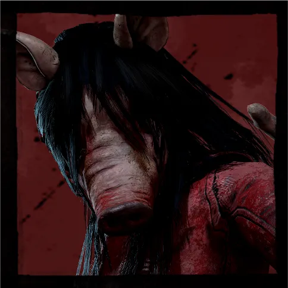 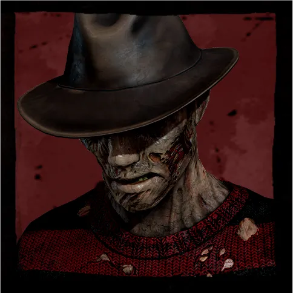 |
| 2 addons verdes o inferiores | 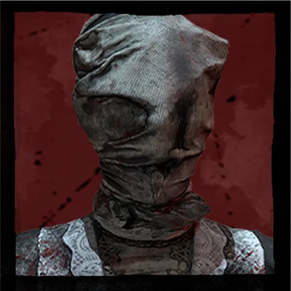 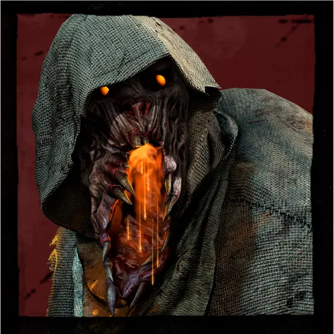 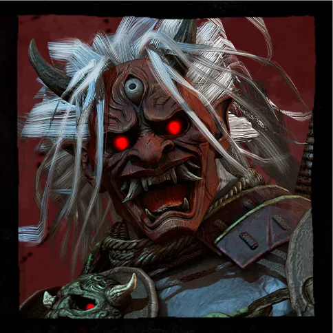 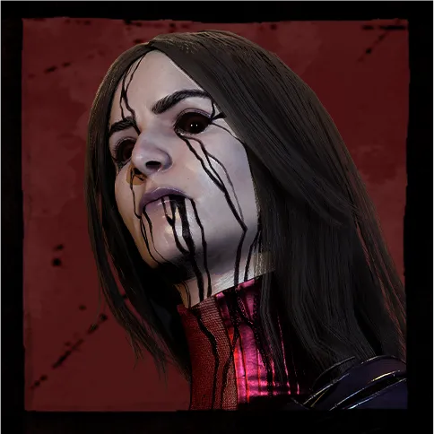 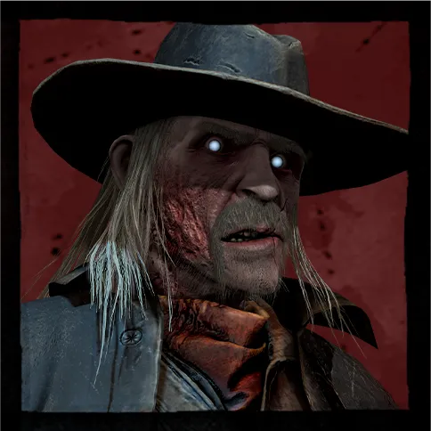 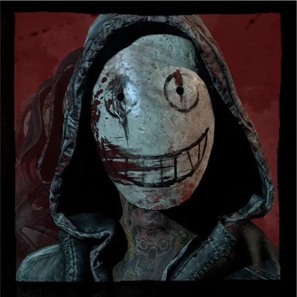 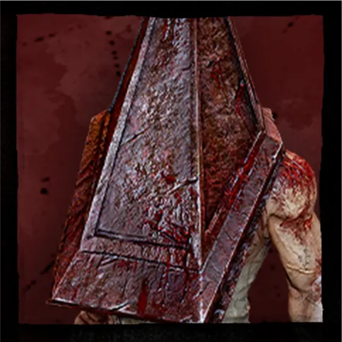 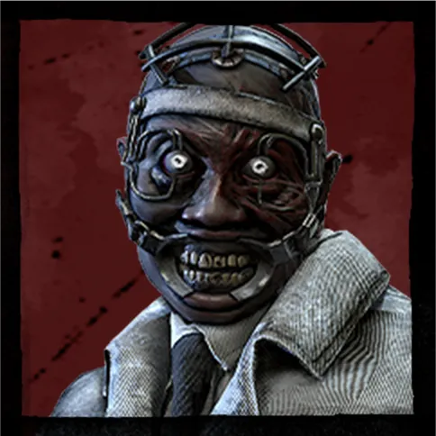 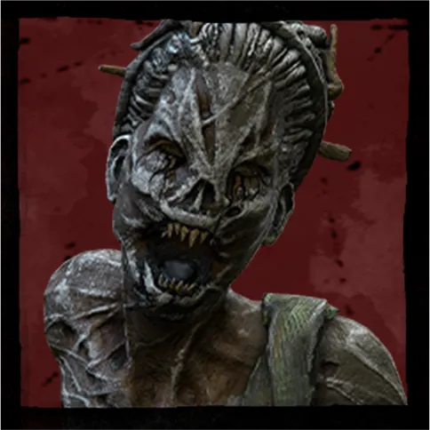 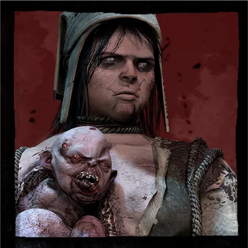 |
I. Rescate con linterna.
II. Rescate con perk de agotamiento (De Frente).
III. Rescate con palé (incluyendo el uso de perks).
a. Motor reparado: 1 punto.
b. Escape: 1 punto.
c. Más todas las posibles bonificaciones.
a. Motores sin reparar: 1 punto.
b. Cuelgue efectivo: 1 punto.
c. Survivor que no logre escapar/Survivor asesinado en gancho/Survivor asesinado con mori: 1
punto.
I. Si el equipo en cuestión estaba jugando de killer, se considerarán los puntos de la premade
USM, y el que haya conseguido que los survivors lograran una menor cantidad de puntos de sangre,
será el ganador del desempate.
II. Si el equipo en cuestión estaba jugando de survivor, se considerarán los puntos de sangre de
la premade que compite, y el que haya conseguido una mayor cantidad de puntos de sangre, será el
ganador del desempate.
III. Ambos resultados se tomarán en cuenta y se decidirá a través de los supuestos anteriores,
quién pasa a la siguiente ronda.
I. Se realizará una investigación, frente al equipo que se encuentre comprometido en esta
situación, que deberá ser fundada y motivada. Además, se tomará en cuenta la opinión de los
demás capitanes (esto sin perjuicio de que pueda decidirse lo contrario a lo que la mayoría
decida).
II. Si se prueba que el equipo está usando cualquiera de las ventajas a las que se refiere este
artículo, la penalización será expulsión directa y un veto de cualquier torneo o evento que USM
pueda realizar.
I. Si la desconexión se realiza antes de que hayan pasado 5 minutos, la partida podrá
reiniciarse, siempre y cuando no se hayan realizado ya 2 cuelgues o reparado 2 motores. No será
penalizable este supuesto, pero se atenderá a los supuestos III y IV para evitar el uso de la
desconexión como parte de una estrategia.
II. Si la desconexión se hace sin atender los supuestos anteriores, la penalización será de 5
puntos, más lo que se disponga en las siguientes fracciones.
III. Cuando la desconexión se haya dado por parte de la premade, éstos no podrán cambiar sus
perks, personajes, objetos o addons, sin embargo, el killer podrá cambiar sus perks, addons o en
su defecto el killer.
IV. Cuando la desconexión se haya dado por parte del killer, éste no podrá cambiar sus perks ni
addons, sin embargo, la premade sí podrá cambiar sus perks, personajes, objetos y addons.
V. Si la desconexión, en caso de los survivors, se realiza posterior a lo que señala la fracción
I, no será posible el reinicio de partida y se tendrá que jugar con la cantidad de survivors que
quedaron en la partida.
VI. Si la desconexión, en caso de killers, se realiza posterior a lo que señala la fracción I,
el reinicio de partida se dará, pero contando como puntos extra sólo los puntos que hayan
realizado los survivors.
a. Si se trata de un killer que juega en consola, tendrá que enviar un clip donde logre verse que es el jugador, que se encuentra en el lobby de la partida y que está jugando en consola.
II. Cuando el equipo esté desempeñando el rol de survivor, tendrán que jugar en el canal del server de discord de USM (Una Squad Más y Fernan), no podrán silenciarse. La partida deberá jugarse en presencia del encargado de verificación.
I. Que el jugador demuestre que era jugador de otra plataforma y muestre con una foto de su
devoción anterior que es cierto lo que afirma.
II. Se trate de jugadores que, por consenso de la comunidad, tienen buena reputación y una
habilidad dentro de lo común o acorde a las horas de juego que tiene.
I. La regla que impide que se pueda repetir killers (regla 6).
II. La regla que obliga a los jugadores a intercalarse entre ellos sin repetirse al momento de
jugar cada partida. La forma en que han de regirse los turnos para jugar de killer, será
totalmente a discreción del equipo USM (regla 7).